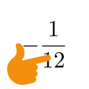

Kaz
|  Maths | Functional Programming |
 Puzzles
Puzzles
|
 Mario Hacking
Mario Hacking
|
 Misc
Misc
|
|---|
I'm primarily interested in combinatorics and topology. I love seeing unexpected connections between different areas of math! Here's some blurbs about research I've done:
Convex Codes
Given a family of sets, we can record how they overlap and intersect with a code:
Given a code, when can we find a family of convex sets (a realization of the code) whose overlapping/intersection pattern
matches the code? The answer is yes for some codes (like $\{12,1,2,\emptyset\}$) and no for others
(like $\{12,23,\emptyset\}$), but no general classification exists.
I studied a more specific problem: given a code, when can we find a realization by boxes,
that is, Cartesian products of intervals (e.g. a rectangle and rectangular prism are boxes)?
The main result I found is that there exist codes on $n$ indices which are realizable, but the $n$ boxes
need to be in $\frac{\binom{n}{n/2}}{2}$ dimensions! This is exponential in $n$, which is quite surprising.
Click here to read more, or this paper I co-authored,
or my thesis.
Anti-Ramsey multiplicities, aka rainbows!
Given a subgraph $H$, what is the $r$-coloring of $K_n$ which maximizes the number of rainbow copies of $H$ (that is, where all edges of $H$ have different colors)?This question is quite difficult. Often, a random coloring is optimal (asymptotically). But there are some graphs $H$ where random colorings are not optimal. The main result that our team, led by Zhanar Berikkyzy and Gabriel Elvin, found was that we can beat random colorings, for the graph $C_6$ (a 6-cycle) with 6 colors. Using a computer, we found this graph, which has 544 rainbow $C_5$'s in $K_{10}$.
Now the trick is to identify each vertex of the above $K_{10}$ with a "blob" of two vertices, and use a 6th color for edges within each blob. This way we get a $K_{20}$ with 87040 $C_6$'s. We can now inductively "blow up" the graph to always beat a random coloring of $K_n$ for large $n$. (It was pretty exciting to find this new result, so I wanted to add a $!$ to the end of the previous sentence, except then it would look like $n!$)
Hat Problems
Here's a riddle: there are 2 people, and each is wearing a red hat or blue hat. Each person can see the other's hat but not their own. Each person guesses their hat color simultaneously. Develop a strategy that guarantees 1 correct guess.The solution: Person 1 assumes both hats are the same color; person 2 assumes both hats are different colors. One of them will be right.
The research I worked on, led by William Gasarch, extended this question to more complicated scenarios. For example, perhaps the people are situated in a way so that they can only see a few other people's hats. We can make a sight graph, where an edge between vertices $(x,y)$ means that persons $x$ and $y$ can see each other. One of our results is: if the sight graph is the complete bipartite graph $K_{m,n}$, then the best strategy will guarantee $\lfloor \frac{\min(m,n)}{2} \rfloor$ correct guesses.
We also investigated a different problem, called the Line of Sages problem. In this variant there are $n$ people standing in a line, where person $i$ can see the hats of persons $i+1, i+2, \cdots, n$. There are some number of hat colors, and each color can be used at most once. Furthermore, people guess sequentially starting from the back of the line, and no person can repeat a previous person's guess. We found something really surprising: if there's 3 players, and any number of colors (say, a million!), then there's a strategy that guarantees 2 correct answers! And furthermore, using overpowered results on Steiner systems, for any number of players $n$, there's an infinite number of $k$'s where if there's $k$ colors, then there's a strategy that guarantees $n-1$ correct answers.
For more details, check out our paper!